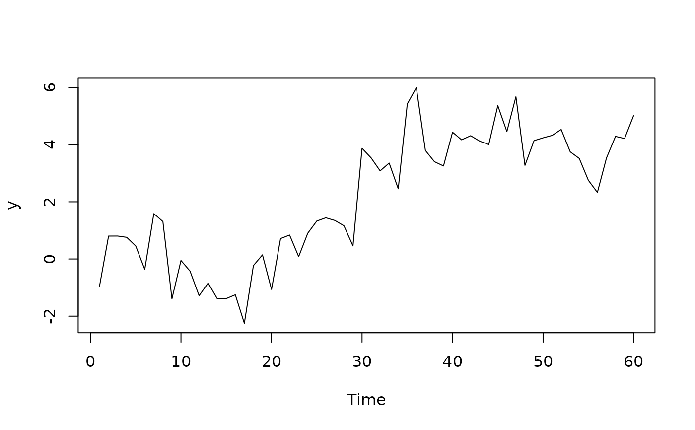

General-to-Specific (GETS) modelling function
getsFun.RdAuxiliary function (i.e. not intended for the average user) that enables fast and efficient GETS-modelling with user-specified estimators and models, and user-specified diagnostics and goodness-of-fit criteria. The function is called by and relied upon by getsm, getsv, isat and blocksFun.
Usage
getsFun(y, x, untransformed.residuals=NULL,
user.estimator=list(name="ols"), gum.result=NULL, t.pval=0.05,
wald.pval=t.pval, do.pet=TRUE, ar.LjungB=NULL, arch.LjungB=NULL,
normality.JarqueB=NULL, user.diagnostics=NULL,
gof.function=list(name="infocrit"), gof.method=c("min", "max"),
keep=NULL, include.gum=FALSE, include.1cut=FALSE,
include.empty=FALSE, max.paths=NULL, turbo=FALSE, tol=1e-07,
LAPACK=FALSE, max.regs=NULL, print.searchinfo=TRUE, alarm=FALSE)Arguments
- y
a numeric vector (with no missing values, i.e. no non-numeric 'holes')
- x
a
matrixorNULL- untransformed.residuals
NULL(default) or, whenolsis used withmethod=6inuser.estimator, a numeric vector containing the untransformed residuals- user.estimator
a
list. The first item should be namednameand contain the name (a character) of the estimation function (the default is"ols"). Additional items, if any, in the listuser.estimatorare passed on as arguments to the estimator in question. Optionally, the list can also contain an item namedenvir, a character, which indicates the environment in which the user-specified estimator resides. The value returned by the user-specified estimator should be alist, see details- gum.result
a
listwith the estimation results of the General Unrestricted Model (GUM), orNULL(default). If the estimation results of the GUM are already available, then re-estimation of the GUM is skipped if the estimation results are provided via this argument- t.pval
numericvalue between 0 and 1. The significance level used for the two-sided regressor significance t-tests- wald.pval
numericvalue between 0 and 1. The significance level used for the Parsimonious Encompassing Tests (PETs)- do.pet
logical. IfTRUE(default), then a Parsimonious Encompassing Test (PET) against the GUM is undertaken at each regressor removal for the joint significance of all the deleted regressors along the current path. IfFALSE, then a PET is not undertaken at each regressor removal- ar.LjungB
a two element
vectororNULL(default). In the former case, the first element contains the AR-order, the second element the significance level. IfNULL, then a test for autocorrelation is not conducted- arch.LjungB
a two element
vectororNULL(default). In the former case, the first element contains the ARCH-order, the second element the significance level. IfNULL, then a test for ARCH is not conducted- normality.JarqueB
NULLor anumericvalue between 0 and 1. In the latter case, a test for non-normality is conducted using a significance level equal tonormality.JarqueB. IfNULL, then no test for non-normality is conducted- user.diagnostics
NULL(default) or alistwith two entries,nameandpval. The first item (name) should contain the name of the user-defined function, and must be of classcharacter. The second item should contain the chosen significance level or levels, i.e. either a scalar or a vector of length equal to the number of p-values returned by the user-defined diagnostics function, see details. Optionally, the listuser.diagnosticscan also contain a third item namedenvir, a character, which indicates the environment in which the user-defined function resides- gof.function
a
list. The first item should be namednameand contain the name (a character) of the Goodness-of-Fit (GOF) function used. Additional items in the listgof.functionare passed on as arguments to the GOF-function. The value returned by the GOF-function should be a numeric value (of length 1). Optionally, the listgof.functioncan also contain an item namedenvir, a character, which indicates the environment in which the user-defined function resides- gof.method
a
character. Determines whether the best Goodness-of-Fit is a minimum or maximum- keep
NULLor an integer vector that indicates which regressors to be excluded from removal in the search- include.gum
logical. IfTRUE, then the GUM (i.e. the starting model) is included among the terminal models. IfFALSE(default), then the GUM is not included- include.1cut
logical. IfTRUE, then the 1-cut model is added to the list of terminal models. IfFALSE(default), then the 1-cut is not added, unless it is a terminal model in one of the paths- include.empty
logical. IfTRUE, then the empty model is added to the list of terminal models. IfFALSE(default), then the empty model is not added, unless it is a terminal model in one of the paths- max.paths
NULL(default) or an integer greater than 0. IfNULL, then there is no limit to the number of paths. If an integer (e.g. 1), then this integer constitutes the maximum number of paths searched (e.g. a single path)- turbo
logical. IfTRUE, then (parts of) paths are not searched twice (or more) unnecessarily, thus yielding a significant potential for speed-gain. However, the checking of whether the search has arrived at a point it has already been comes with a slight computational overhead. Accordingly, ifturbo=TRUE, then the total search time might in fact be higher than ifturbo=FALSE. This happens if estimation is very fast, say, less than quarter of a second. Hence the default isFALSE- tol
numeric value (
default = 1e-07). The tolerance for detecting linear dependencies in the columns of the variance-covariance matrix when computing the Wald-statistic used in the Parsimonious Encompassing Tests (PETs), see theqr.solvefunction- LAPACK
currently not used
- max.regs
integer. The maximum number of regressions along a deletion path. Do not alter unless you know what you are doing!- print.searchinfo
logical. IfTRUE(default), then a print is returned whenever simiplification along a new path is started- alarm
logical. IfTRUE, then a sound or beep is emitted (in order to alert the user) when the model selection ends
Details
The value returned by the estimator specified in user.estimator should be a list containing at least six items: "coefficients", "df", "vcov", "logl", "n" and "k". The item "coefficients" should be a vector of length NCOL(x) containing the estimated coefficients. The item named "df" is used to compute the p-values associated with the t-statistics, i.e. coef/std.err. The item named "vcov" contains the (symmetric) coefficient-covariance matrix of the estimated coefficients. The items "logl" (the log-likelihood), "n" (the number of observations) and "k" (the number of estimated parameters; not necessarily equal to the number of coefficients) are used to compute the information criterion. Finally, the estimator MUST be able to handle empty regressor-matrices (i.e. is.null(x)=TRUE or NCOL(x)=0). In this case, then the first three items (i.e. "coefficients", "df" and "vcov") can - and should - be NULL.
The argument user.estimator enables the user to specify an estimator that differs from the default (ols). To do this, the argument should be a list with at least one entry, name (of class character), that contains the name of the user-defined function. The call to this function is executed with do.call, whose default value on envir is parent.frame(). Usually, this will be the global environment (.GlobalEnv), but it can be changed by adding an entry named envir to the list that indicates where the user-defined function resides.
The argument user.diagnostics enables the user to specify additional - or alternative - diagnostics, see diagnostics.
The argument gof.function enables the user to specify a goodness-of-fit function that differs from the default (infocrit). The principles to follow are the same as that of user.estimator: The argument should be a list with at least one entry, name, that contains the name of the user-defined function, additional entries in the list are passed on to the user-specified goodness-of-fit function, and optionally an entry named envir may indicate where the user-defined function resides.
References
C. Jarque and A. Bera (1980): 'Efficient Tests for Normality, Homoscedasticity and Serial Independence'. Economics Letters 6, pp. 255-259
G. Ljung and G. Box (1979): 'On a Measure of Lack of Fit in Time Series Models'. Biometrika 66, pp. 265-270
F. Pretis, J. Reade and G. Sucarrat (2018): 'Automated General-to-Specific (GETS) Regression Modeling and Indicator Saturation for Outliers and Structural Breaks'. Journal of Statistical Software 86, Number 3, pp. 1-44
G. sucarrat (2019): 'User-Specified General-to-Specific and Indicator Saturation Methods', Munich Personal RePEc Archive: https://mpra.ub.uni-muenchen.de/96653/
Author
Genaro Sucarrat, http://www.sucarrat.net/
Examples
##aim: do gets on the x-part (i.e. the covariates) of an arma-x model.
##create the user-defined estimator (essentially adding, renaming
##and re-organising the items returned by the estimator):
myEstimator <- function(y, x)
{
tmp <- arima(y, order=c(1,0,1), xreg=x)
#rename and re-organise:
result <- list()
result$coefficients <- tmp$coef[-c(1:3)]
result$vcov <- tmp$var.coef
result$vcov <- result$vcov[-c(1:3),-c(1:3)]
result$logl <- tmp$loglik
result$n <- tmp$nobs
result$k <- NCOL(x)
result$df <- result$n - result$k
return(result)
}
##generate some data:
##a series w/structural break and eleven step-dummies near the break
set.seed(123)
eps <- arima.sim(list(ar=0.4, ma=0.1), 60)
x <- coredata(sim(eps, which.ones=25:35)) #eleven step-dummies
y <- 4*x[,"sis30"] + eps #create shift upwards at observation 30
plot(y)

##estimate the gum and then do gets in a single step:
##getsFun(y, x, user.estimator=list(name="myEstimator"))
##estimate the gum and then do gets in two steps:
#mygum <- myEstimator(y, x)
##getsFun(y, x, user.estimator=list(name="myEstimator"), gum.result=mygum)